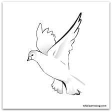

We all want to be free. We wish to be free of all limitations and constraints in life. Looking at the birds, I believe, is the best way to understand freedom.Therefore, the dove is seen as a symbol of liberty. If I were a bird, I would like to dwell in the woods and be hidden from the humans. If I were a bird, I would reach for the beautiful sky and soar as high as I could. I would fly into the clouds and snooze there for a while. Their natural freedom is to fly across the sky and touch rivers on the ground. Their actual freedom is eating a variety of fruits, grains, and vegetables while remaining hidden from prying eyes.